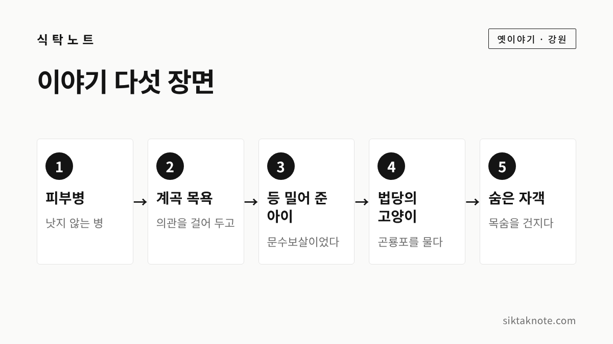

오대산 상원사 문수동자와 세조 이야기 — 계곡에서 등을 밀어 준 아이, 목숨을 구한 고양이

3줄 요약
- 피부병을 앓던 세조가 오대산 계곡에서 등을 밀어 준 아이를 만났는데, 그 아이가 문수보살이었다는 전설이 전해집니다.
- 자객을 알려 세조의 목숨을 구했다는 고양이 이야기도 있는데요. 두 이야기 모두 실록에서는 찾아볼 수 없다고 해요.
- 세조가 1466년 상원사에 들렀다는 기록과 국보 문수동자좌상·동종은 확인되는 역사이니, 전설과 나누어 보시면 좋습니다.
행사 정보
- 위치
- 강원 평창군 진부면 오대산 자락, 월정사에서 계곡을 따라 위쪽
- 볼거리
- 목조 문수동자 좌상(국보), 상원사 동종(국보), 고양이 석상, 관대걸이
- 걷는 길
- 선재길 — 월정사에서 상원사까지 계곡을 따라 약 9km
- 입장료
- 없음 (언론 보도 기준)
2026.10.09 확인 기준. 사찰 안 일부 전각은 수행 공간이라 출입이 제한될 수 있어요. 탐방로 통제와 버스 시간은 국립공원공단과 평창군 안내를 확인해 주세요.

병을 안고 오대산을 찾은 임금
오대산 상원사에는 조선의 임금 세조에 얽힌 이야기가 두 가지 전해지는데요. 하나는 계곡에서 만난 아이 이야기이고, 다른 하나는 고양이 이야기입니다. 둘 다 오래 사랑받아 온 전설이라, 상원사에 가면 그 흔적을 여기저기서 만날 수 있어요.
세조는 조카 단종에게서 왕위를 빼앗은 임금입니다. 전설에서는 세조가 그 뒤로 몸에 피부병이 생겨 오래 괴로워했다고 하는데요. 꿈에 단종의 어머니 현덕왕후가 나타나 침을 뱉었고, 그 자리마다 병이 생겼다는 이야기까지 함께 전해집니다. 물론 이건 어디까지나 이야기로 전해지는 대목이에요.

계곡에서 등을 밀어 준 아이
병을 고치려 오대산을 찾은 세조는 상원사로 오르는 길에 맑은 계곡물을 만났습니다. 신하들을 물리고 혼자 몸을 씻으려 했는데, 등은 혼자 닦을 수가 없었죠. 그때 어디선가 동자 하나가 나타났다고 해요.
세조는 아이에게 등을 밀어 달라고 부탁하면서 한마디 덧붙였습니다. "어디 가서 임금의 몸을 씻었다고 말하지 마라." 그러자 아이가 이렇게 답했다고 하는데요. "임금님도 어디 가서 문수보살을 만났다고 말하지 마세요."
세조가 놀라 돌아보니 아이는 이미 사라지고 없었습니다. 그리고 그 뒤로 몸의 병이 씻은 듯 나았다고 전해져요. 문수보살은 지혜를 상징하는 보살이고, 오대산은 예부터 문수보살이 머무는 산으로 알려져 있습니다. 그래서 이 이야기가 다른 곳이 아닌 오대산에 깃들게 된 것이겠지요.

목숨을 구한 고양이
고양이 이야기는 그다음 해의 일로 전해지는데요. 세조가 다시 상원사를 찾아 법당에 들어서려는데, 어디선가 고양이 한 마리가 나타나 세조의 곤룡포 자락을 물고 자꾸 잡아당겼다고 합니다.
이상한 낌새를 느낀 세조가 법당 안을 살피게 했더니, 불상을 모신 탁자 밑에 칼을 든 자객 세 명이 숨어 있었다고 해요. 고양이 덕분에 목숨을 건진 셈이죠. 지금도 상원사 청량선원으로 오르는 계단 좌우에는 고양이 석상 두 구가 서 있습니다. 이 고양이를 기려 세운 것이라고 알려져 있어요.

전설과 기록은 나누어 보세요
여기까지가 전설인데요. 이제 확인되는 기록을 따로 보겠습니다.
주간경향에 실린 역사 칼럼에 따르면, 문수동자와 고양이 이야기는 이능화가 1918년에 펴낸 불교사 책에 실려 있지만 실록 같은 문헌 사료에서는 찾아볼 수 없다고 합니다. 이야기가 언제부터 전해졌는지는 분명하지 않다는 뜻이에요.
반면 세조가 상원사에 들른 일은 기록으로 남아 있습니다.
- 1466년 강원도 순행: 세조실록에 기록된 세조의 39일간의 강원도 순행에서 오대산은 중요한 방문지였고, 세조는 상원사를 다시 고쳐 지은 뒤 연 낙성식에 직접 참석했다고 합니다. 국립조선왕조실록박물관이 2026년 이 순행을 주제로 전시를 열면서 이렇게 소개했다고 보도되었어요.
- 목조 문수동자 좌상: 한국민족문화대백과사전에 따르면 세조의 둘째 딸 의숙공주 부부가 1466년에 이 문수동자상을 봉안했다는 기록이 상 안에서 나온 유물에 남아 있습니다. 1984년 국보로 지정되었어요.
- 상원사 동종: 725년(성덕왕 24)에 만들어진 종으로, 1962년 국보로 지정되었습니다. 원래 안동 관아의 문루에 걸려 있던 것을 1469년(예종 1) 나라의 명으로 상원사에 옮겼다고 해요. 세조가 세상을 떠난 이듬해의 일입니다.
전설 속 아이의 얼굴을 떠올리며 문수동자상을 보는 건 즐거운 일인데요. 다만 이 상은 세조가 만난 아이를 그대로 새긴 것이라기보다, 세조 때 왕실의 불교 후원 속에서 만들어진 것으로 보는 편이 기록에 가깝습니다.

상원사에서 만나는 이야기의 자취
상원사에 가면 전설과 기록이 한자리에 모여 있습니다.
- 관대걸이: 상원사 입구 쪽에 있는 돌로, 세조가 계곡에서 몸을 씻기 전에 벗은 의관을 걸어 두었던 곳이라고 전해져요.
- 고양이 석상: 청량선원 입구 계단 양옆에 한 쌍이 서 있습니다.
- 문수동자상: 어린아이 모습을 한 문수보살상인데요. 한국민족문화대백과사전은 만든 연대와 발원자가 분명하고 따로 모셔진 드문 예라고 설명합니다.
- 상원사 동종: 지금 남아 있는 우리나라 종 가운데 가장 오래된 종으로 알려져 있어요. 종 입구에 작은 금이 생겨 지금은 본뜬 종을 대신 쓰고, 이 종은 치지 않는다고 합니다.

선재길로 이어 걸어 보세요
상원사는 월정사에서 오대천 계곡을 따라 위쪽으로 올라간 곳에 있습니다. 두 절 사이를 잇는 숲길이 선재길인데요. 길이는 약 9km로 알려져 있고, 평탄한 편이지만 끝까지 걸으려면 넉넉히 시간을 잡으셔야 합니다. 중간에 찻길과 이어지는 지점이 있어서 일부만 걸어도 돼요.
세조가 병을 씻었다는 계곡도 바로 이 오대천 물줄기입니다. 길을 걸으면서 맑은 물소리를 듣다 보면, 왜 이런 이야기가 여기서 생겨났는지 조금은 짐작이 가는데요. 상원사를 먼저 둘러보고 계곡을 따라 걸어 보시면 이야기가 한층 가깝게 느껴질 것 같습니다.
두 절 사이를 오가는 버스는 하루 운행 횟수가 많지 않다고 하니, 가시기 전에 시간표를 꼭 확인하세요. 단풍 무렵 선재길 이야기는 설악산·오대산 단풍 시기 글에 따로 정리해 두었습니다.
자주 묻는 질문
문수동자상은 아무 때나 볼 수 있나요? 상원사 경내에 모셔져 있습니다. 다만 법회나 수행 일정에 따라 참배가 제한될 수 있으니 현장 안내를 따라 주세요.
고양이 석상은 어디에 있나요? 청량선원으로 오르는 계단 좌우에 있습니다. 법당 쪽으로 올라가다 보면 자연스럽게 지나게 돼요.
세조의 이야기는 영월에 유배된 단종의 이야기와 맞닿아 있는데요. 같은 시대를 반대편에서 바라본 이야기라, 단종과 영월 이야기를 함께 읽어 보시면 상원사의 전설이 조금 다르게 들리실 겁니다.
이 글은 여러 자료에서 확인되는 줄거리를 바탕으로 새로 풀어 쓴 것입니다. 전설은 전하는 사람에 따라 내용이 조금씩 다를 수 있어요.